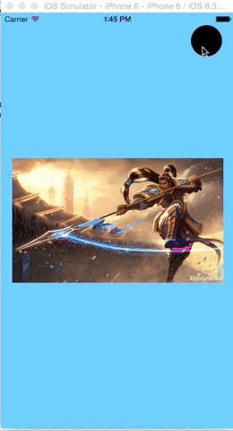

之前在微博上看到有人转发的这种效果,一直想学习,偶尔一次在一个帖子上看到实现过程,原文 使用swift实现.
实现效果如下

wow 效果太赞了
1.shape layer,maskLayer,CA动画的使用(关于layer的使用)
2. UIViewControllerAnimatedTransitioning协议和类UIPercentDrivenInteractiveTransition的使用
3.其他的小技巧(比如使用xib中如何实现圆角button)
如果你上述知识不熟悉可以自行点开链接去补充下.这里不做详细介绍
原文网址--http://www.raywenderlich.com/86521/how-to-make-a-view-controller-transition-animation-like-in-the-ping-app(本文在此基础修改)